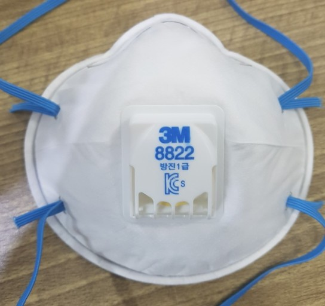

베릴륨은 원소 기호 Be, 원자 번호 4번, 주기율표의 2족, 2주기에 위치하는 금속 원소이다. 대부분은 토양에 있으며 100종 이상의 광물에서 발견된다. 베릴륨은 태양에서도 약 0.1 ppb의 양이 발견되며 지구에는 약 2-6 ppm 정도가 존재한다. 베트르랑다이트나 베릴, 금록석, 페나카이트 등의 화합물에 포함되어 있으며 아쿠아마린이나 에메랄드 형태로도 발견된다. 순수한 베릴륨으로 존재하지는 않기 때문에 베릴륨 화합물에서 추출하여 얻게 된다. 동위원소 특징으로 인하여 원자력 관련 응용 분야에 사용되며 구리나 니켈 철 등과 혼합하여 강도 높은 합금 형태로 항공우주, 금속 및 세라믹 가공 등의 목적에 이용되기도 한다.
